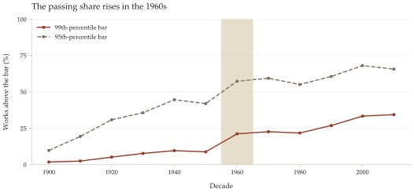
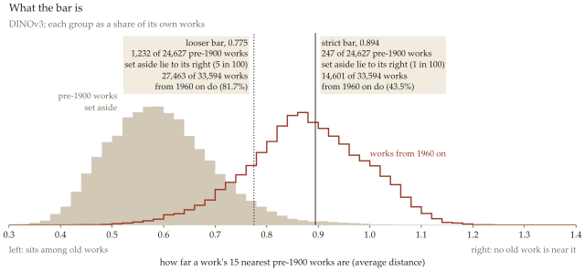
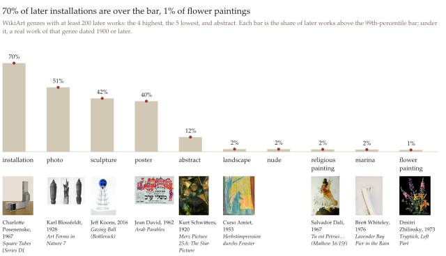
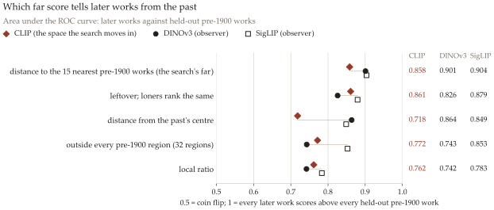
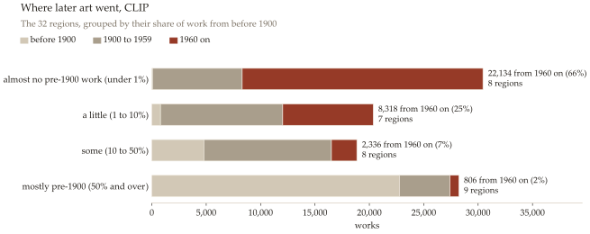
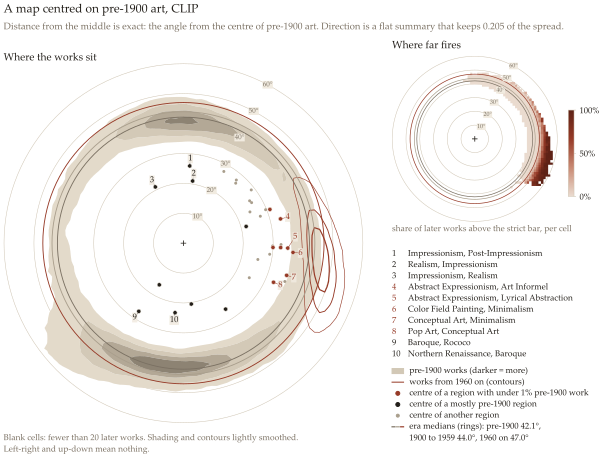
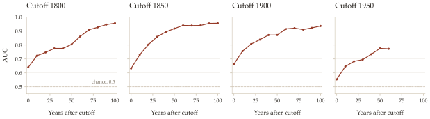

Q6 How do real works after 1900 score on our measure of far?
Q5 left us with a kind of far that says a work has few others around it. Before we build on it, we ask: how do real works after 1900 score on it, measured against the works before 1900 alone? For each later work we find, in each encoder, its 15 nearest works before 1900 and take the mean of those distances, its score.1 The bar (our cut-off on the score) is the score that 99% of the works before 1900 lie below (Figure 2).23
A. In CLIP, part of the century is over the bar, and more of it from the 1960s. In CLIP, about 5% of the works from 1900 to 1959 are over the bar, and about 26% of those from 1960 on (Figure 1).4 In DINOv3 the share from 1960 on is larger, about 43% (Figure 2). So the century did move away from its past on this measure, though most later works are not over the bar.


B. In CLIP, installations, photographs, sculpture, posters and street art are over the bar most often. Of these, 40 to 73% are over it, against 1 or 2% of landscapes, nudes, flower pieces and religious paintings (Figure 3).5
As Q5 found over the whole corpus, far flags photographs, posters and installations. Installation and sculpture are also among the later works the basis from before 1900 describes worst (Q4).6 So against 1900 the score favours the same kinds of work, and a new medium (installation, photograph, poster) most of all.
To this bar a new medium and a new date look the same, and what a search should find depends on what we call new.

Why this score, and not another kind of far? C. Of the 5 measures of far we compared, the search’s score tells later works from earlier ones best in DINOv3 and SigLIP, its 2 observers (the encoders the search does not move in, Q7). The five are the search’s score (the distance to the 15 nearest earlier works), the leftover of Q4, the distance from the centre of earlier art, lying outside every region of earlier art (32 regions fitted on earlier works alone), and the local ratio. On the works’ own vectors the score ranks a later work above an earlier one about 90% of the time in DINOv3 and SigLIP, against about 83% and 88% for the leftover (Figure 4).78 In CLIP, where the search moves, the two are about even. So this is the measure the search of Q10 is built on.9

Where do the later works sit?
D. In CLIP, most works from 1960 on sit where earlier works are almost absent. We split CLIP’s space into 32 regions, fitted on earlier and later works together. Of the works from 1960 on, 66% fall in the 8 regions where under 1% of the works are earlier (Figure 5, Figure 6, Figure 7).10111213 In each observer’s own regions a later work is over that observer’s bar much more often where earlier works are almost absent (no surprise, as a distance to the nearest earlier works is large where they are few).



We also notice that a freeze at 1800 or 1850 gives the same picture (Figure 8).1415 Letting a work’s own artist stand among its neighbours puts about 1.8 times as many later works over the bar. And about 1% of the earlier works left out of the bar’s reference are over it, the rate the bar is built to give.16

Next, the Methods overview builds a search on this score.
Footnotes
The score is the absolute kind of far of Q5 (which takes the 10th nearest work), with the 1900 cut of Q2. To build the bar as Q7 defines it, we score each of the earlier works against the others with its own artist left out, as a third of a work’s 15 nearest works are by its own artist (Q1). Taking 99% over 95% or 90% is a convention we chose.↩︎
We build the score and the bar in CLIP on the works’ own vectors and not on repainted pictures, so this is the same kind of bar as the search’s and not the same bar.↩︎
The figure in detail: Half of the artists before 1900 are set aside (24,627 works), and each of their works is scored by its mean distance to its 15 nearest works of the other half, the reference half (28,404 works), own artist left out. The pale fill is those scores, and the red line the same score for the 33,594 works from 1960 on whose artist is not in the reference half, each group as a share of its own works. The dotted line is the looser bar, 0.775: 1,232 set-aside works (5%) and 27,463 works from 1960 on (81.7%) lie over it. One set-aside work scores under 0.30, outside the drawn range, and is counted.↩︎
The score is read in CLIP over each work’s 15 nearest works before 1900, its own artist left out; the bar is 0.792. Over the bar: 5.1% of works from 1900 to 1959, 25.7% from 1960 on; by decade 9.6% (1940s), 8.8% (1950s), 21.2% (1960s), 22.6% (1970s), 21.7% (1980s). We have not tested the rise against the works’ image sources. Over the looser bar: 57.4% of 1960s works (52.6% of the non-media ones). At the looser bar more than half of the 1960s works are over it.↩︎
Share of later works over the bar, for labels with at least 200 later works: installation 70%, photo 51%, sculpture 42%, poster 40%, figurative 22%, design 19%, abstract 12%, landscape, nude, religious painting and marina 2%, flower painting 1%; by style, street art 73% and conceptual 66%. Media genres are 11% of later works. They are 29% of the works over the bar when the score and the bar are built with each work’s own artist allowed among its neighbours. Painting is still most of the works over the bar, because it is most of the works.↩︎
Abstraction is also among the later works the basis describes worst, yet only 12% of later abstract works are over the bar here. In Q5 far is the distance to the 10th nearest work, over the whole corpus. Installation and sculpture also sit along axis 1, the direction the decades move along from the 1930s on (Q3). We have not measured whether the works over the bar here and the works Q5 flags are the same works or only of the same kinds.↩︎
The distance gives 0.901 in DINOv3 and 0.904 in SigLIP, and the leftover 0.826 and 0.879. A loner is a work in the leftover’s top 1% with no top-1% work among its 10 nearest (Q4). It is a rule for picking works and not a ranking, so as a score it ranks as the leftover does and its AUC is the leftover’s.↩︎
The figure in detail: which measure of far tells later works from the past, on the works’ own vectors with the artists before 1900 split in half. Each row is a measure, and each mark the share of pairs in which a later work scores higher than a set-aside earlier work (AUC: 0.5 is a coin flip, 1 means every later work scores above every set-aside one), for the 69,468 works from 1900 on by artists outside the reference half against the 24,627 works of the set-aside half; the 28,404 works of the reference half build the regions, the centre and the directions. The diamond is CLIP, the space the search moves in; the dot is DINOv3 and the open square SigLIP, the observers. In CLIP, DINOv3 and SigLIP: the distance to the 15 nearest earlier works, the search’s far (of the kind in Q5), 0.858, 0.901 and 0.904 (5, 10 or 30 neighbours change these by at most 0.003); the leftover in 32 directions (Q4), 0.861, 0.826 and 0.879, and a loner ranks as the leftover does; the distance from the centre of earlier art, 0.718, 0.864 and 0.849; lying outside every region of earlier art (32 regions fitted on the reference half alone, 95% radius), 0.772, 0.743 and 0.853; and the local ratio at 15 neighbours, 0.762, 0.742 and 0.783. One clustering run.↩︎
We compared the 5 measures on the later works themselves, so the choice of the score saw them. The bar is built only from works before 1900, and in the runs frozen at 1900 the search never sees a later work (the runs scored against today’s reference are in Q11).↩︎
In each observer’s own regions, at its own bar and over all later works, a later work is over the bar much more often where earlier works are almost absent. In DINOv3, 49% of the later works in the 6 regions where under 1% of the works are earlier are over it, against 0.7% in the 7 where half or more are. In SigLIP, 41% of the later works in the 10 regions where under 1% are earlier are over it, against 2.1% in the 10 where half or more are. The regions were fitted on earlier and later works together, and we have not separated what that adds.↩︎
The figure in detail: The 32 regions of CLIP, fitted by spherical k-means (one run, seed 1) on the reference half of the artists before 1900 (28,404 works) and the 69,468 later works together. Each pie is a region: its area is the works in it, and its slices the works before 1900 (pale, the reference half only), 1900 to 1959 (grey) and 1960 on (red). The ring gives the share of the region’s works that come from the reference half, before 1900: thick red under 1% (8 regions), thin red 1 to 10% (7), thin grey 10 to 50% (8), dark 50% and over (9). The 17 regions of the 2 outer groups are named by the two most common styles of their works, from partial style counts (numbered with a key on a phone). The pies keep the angles between region centres only roughly (correlation 0.83 with the true angles over the 496 pairs, typical error 13 degrees; the scale bar is 10 degrees), so distances are not exact, rotation and mirror mean nothing, and this is a different layout from Figure 7. The centres of the 8 regions under 1% sit 30.0 to 36.8 degrees from the centre of art before 1900, those of the 9 mostly earlier regions 16.1 to 27.2. Two regions under 1%, Color Field Painting, Minimalism and Abstract Expressionism, Lyrical Abstraction, sit at almost the same place, and their pies overlap.↩︎
The figure in detail: The 32 regions of Figure 5 in its four groups by share of work from before 1900, one bar per group, coloured by date as there (pale before 1900, grey 1900 to 1959, red 1960 on). Of the 33,594 works from 1960 on, 22,134 (66%) sit in the 8 regions where under 1% of the works are earlier, 8,318 (25%) in the 7 of 1 to 10%, 2,336 (7%) in the 8 of 10 to 50% and 806 (2%) in the 9 of 50% and over. Totals: 28,404 works before 1900 (the reference half of the artists, which fits the regions), 35,874 from 1900 to 1959 and 33,594 from 1960 on, the later works being those whose artist is not in the reference half. Measured the same way in the observers’ own regions, 6 regions in DINOv3 hold 17,462 works from 1960 on (52%), and 10 in SigLIP hold 26,716 (80%).↩︎
The figure in detail: CLIP, seen from the centre of art before 1900, the mean direction of the reference half of its artists (28,404 works). Distance from the middle is exact, the angle of a work from that centre, with rings every 10 degrees. Direction is a flat summary, the 2 main directions of spread round the centre, which keep 0.205 of the spread, so shapes are approximate, left, right, up and down mean nothing, this is a different layout from Figure 5, and it cannot be compared with another space’s map. The first panel, where the works sit: pale shading for the 53,031 works before 1900 (both halves), darker for more; red contours for the 33,594 works from 1960 on, at three levels; solid rings at the median angle of each date, 42.1 degrees before 1900, 44.0 for 1900 to 1959 and 47.0 for 1960 on; and dots for region centres, red for the 8 regions where under 1% of the works are earlier, dark for the 9 mostly earlier, grey for the other 15, with the five largest of the red kind and of the dark kind numbered and named in the key. A region’s centre sits nearer the middle than its works, as an average of spread-out directions points closer to the overall centre. The second panel, where far fires: per cell, the share of the 69,468 later works whose mean distance to their 15 nearest works of the reference half, own artist left out, is over the value that 99% of the set-aside earlier works fall under; 11,175 are over it, and cells with fewer than 20 later works are blank. Shading and contours are lightly smoothed (one bin).↩︎
AUC against the frozen corpus: freeze at 1800, 0.64 in the first decade to 0.95 by the 1890s; at 1850, 0.63 to 0.94 by the 1920s; at 1900, 0.66 to 0.92 by the 1960s; at 1950, 0.55 to 0.78 by the 2000s. Share over the bar sixty years after the freeze: 11.9% for the freeze at 1800 and 25.4% for 1850; for 1900 it is the 1960s share given above. The cutoff sweep in Q2’s footnote puts the fastest change at cutoffs from about 1880 to 1910. The paces differ by up to about two-fold 40 to 60 years after the freeze, so 1900 is a convention the data tolerate.↩︎
The figure in detail: Four full-size frozen corpora (1800: 18,744; 1850: 25,421; 1900: 53,031; 1950: 93,076 works). AUC compares each later decade’s distances with the earlier corpus; 0.5 means a later decade’s work scores higher than an earlier one as often as not. It is not a bar.↩︎
Build the score and the bar with each work’s own artist allowed among its neighbours, and 24.4% of later works are over the bar, against 13.9% with the artist left out (1.76 times overall, 1.59 for 1960 on, 2.2 to 2.8 for the 1910s to the 1950s). Allowing the artist can only make a work’s distance fall or stay the same, so the whole rise comes from the bar, which that choice lowers by 0.035. Earlier works left out of the reference are over the bar at 0.8 to 1.0% at freezes of 1850, 1900 and 1950, in equal-size reruns.↩︎